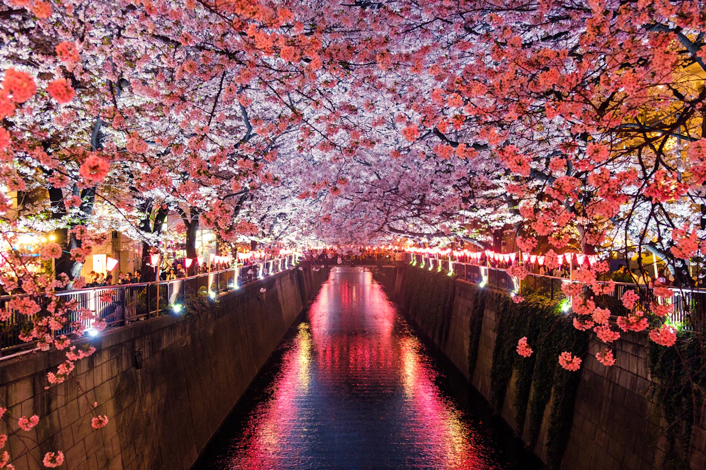
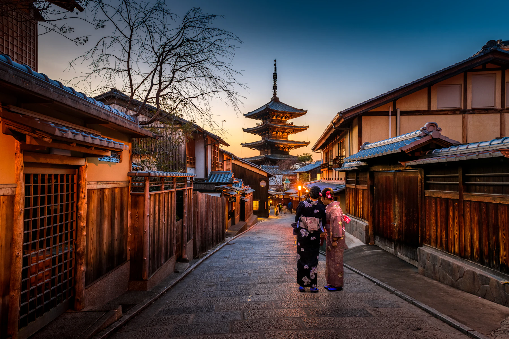
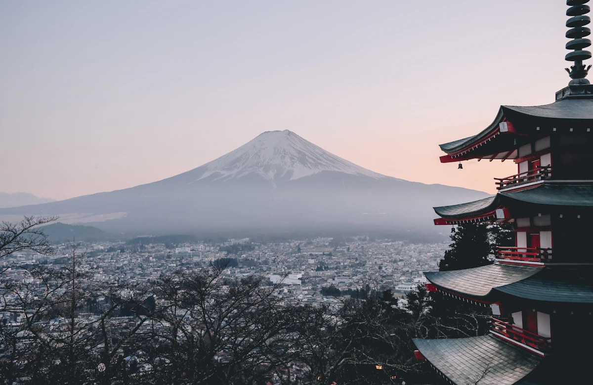

住進地方的日常
選擇能說出土地故事的住所。清晨跟著主人巡田，傍晚一起準備地方料理，旅館不只是睡一晚的地址。
STAY / LOCAL LIFEA journey in its own time
不蒐集景點。從一間老屋、一頓晚飯和一條沒有名字的小路，重新認識一座地方。

真正留下來的，往往是行程表之外的空白。我們替偶遇留位置，替地方保留原來的速度。
每一段旅程只選一個區域，減少移動，把時間交給風土、職人與餐桌。沒有早上六點的集合，也不靠購物站填補空檔。

選擇能說出土地故事的住所。清晨跟著主人巡田，傍晚一起準備地方料理，旅館不只是睡一晚的地址。
STAY / LOCAL LIFE
由地方研究者帶路，從一座城、一條水路與一門手藝，理解今天看到的風景如何形成。
WALK / CONTEXTSelected journey
以銀山溫泉為起點，沿最上川走進雪國聚落。每天只安排一件重要的事，其餘交給天氣。
從市場早餐開始，沿著堰水與藏座敷慢慢認識城下町。午後留給自由散步。
住｜百年藏屋改建宿跟著地方誌編輯走訪舊舟運聚落，傍晚在小酒藏試飲只在當地流通的季節酒。
食｜山菜料理與在地清酒避開一日遊尖峰抵達，入住木造溫泉宿。隔天上午沒有行程，只保留一段雪地散步。
住｜銀山溫泉木造旅館拜訪家族果園，以一場長桌晚餐結束旅程。隔日睡到自然醒後返回仙台。
體驗｜果園共食